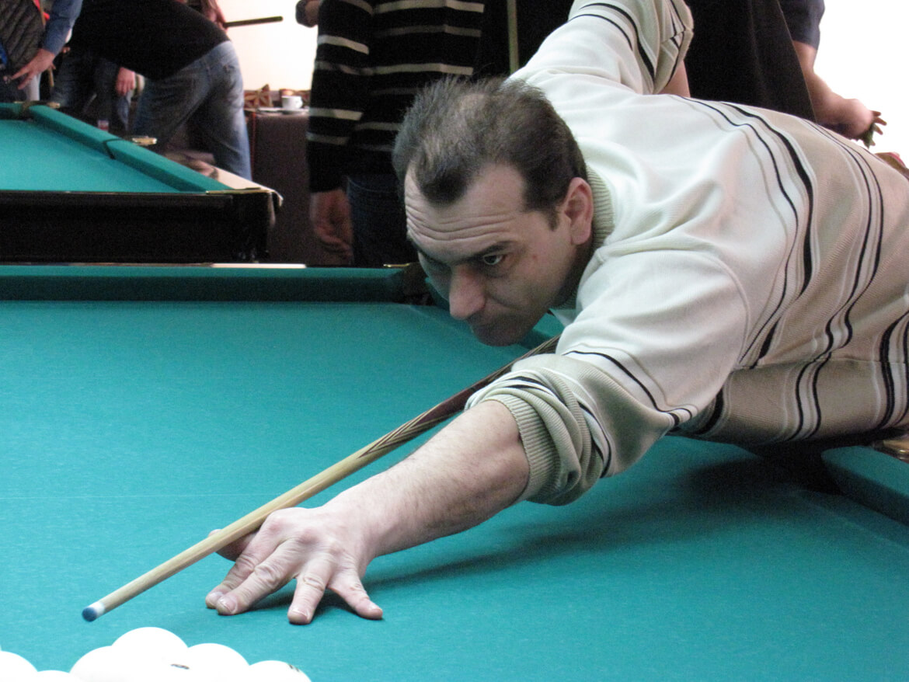
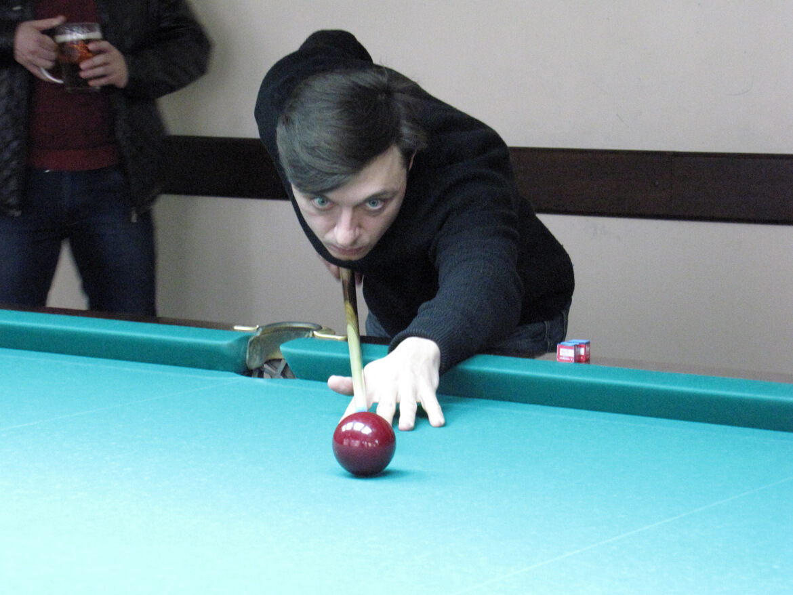
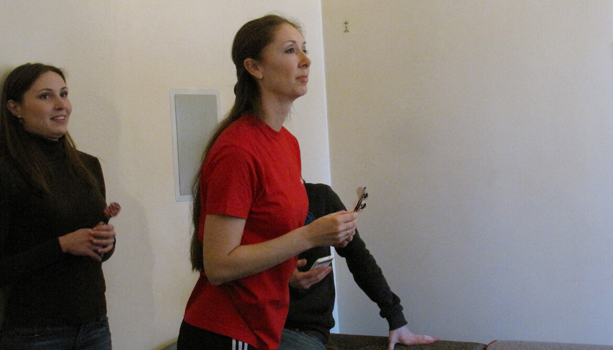

Бильярд и дартс - "Битва корпораций" II сезон
4 марта 2016 года в бильярдном клубе "Банзай" прошёл второй этап II сезона турнира "Битва корпораций".
На этих соревнованиях были разыграны два комплекта медалей, а также командные кубки. Распределение команд по местам в общем зачёте производилось по результатам выступления в двух видах программы: бильярд и дартс.
Владимир Парфенчик и Сергей Зубко, занявшие первые два места в отборочном турнире КП "ХТС", представляли наше предприятие в турнире по бильярду.
Результаты отборочного турнира КП "ХТС" (1.03.2017 - 17:30 - 20:00):
Воронов – Р.Кошаков 2:0 (8:2,8:1), Зубко – Яритенко 2:0 (8:6,8:1), Парфенчик – Лукьянченков 2:0 (8:1,8:3), Воронов – Кушнир 2:0 (8:6,8:6) Кушнир – Парфенчик 1:2 (4:8,8:3,7:8 (7:1 по ходу)), Воронов – Зубко 0:2 (3:8,3:8), Парфенчик – Воронов 2:0 (8:6 (3:6 по ходу), 8:3)
Парфенчик Владимир: +3-0, 6:1 (51:32)
Зубко Сергей: +2-0, 4:0 (32:13)
Воронов Артем: +2-2, 4:4 (47:47)
Кушнир Николай: +0-2, 1:4 (31:35)
Яритенко Олег: +0-1, 0:2 (7:16)
Лукьянченков Виктор: +0-1, 0:2 (4:16)
Кошаков Роман: +0-1, 0:2 (3:16)
Внутренний турнир проводился по специальной схеме, дабы не отнимать драгоценное время у участников. Три претендента отсеялись на первом этапе.
Подробности соревнований "Битва корпораций" по бильярду:
Регламентом турнира было оговорено временное ограничение 20 минут на каждую партию.
Всего собралось 18 команд-участниц. Основные соревнования начинались с 1/8 финала.
Однако, четырём командам предстрояло начать турнир с 1/16. По воле слепого жребия, наша команда по бильярду стала одним из четырёх "счастливчиков", двое из которых должны были вылететь ещё в самом начале. В пару нам достались одни из наших главных конкурентов - представители компании "Adidas".
Другие наши конкуренты "Zotti" попали в 1/16 на победителей турнира "9.8G" и, проиграв обе партии, вылетели из турнира.
КП "ХТС" – "Адидас" 2:1
1-я партия: 5:7 (время)
Шары: 1:0 – Парфенчик, 2:1 – штрафной (Адидас), 3:2 – Парфенчик, 4:5 – Зубко, 5:5 – Зубко
В первой партии судья не правильно трактовал правила турнира, не позволив Владимиру Парфенчику пробить втророй удар в запланированной серии и передал ход Сергею Зубко (По правилам, один из членов команды, забивший шар, продолжает бить до промаха). Далее, судьи уже так не ошибались.
2-я партия: 7:6 (время)
Шары: 1:1 – Зубко, 2:1 – Парфенчик, 3:1 – Зубко, 4:2 – Зубко, 5:2 – Парфенчик, 6:3 – Парфенчик, 7:3 – Парфенчик
3-я партия: 8:1
Шары: 1:0 – Парфенчик, 2:0 – Парфенчик, 3:0 – Парфенчик, 4:0 – Парфенчик, 5:0 – Зубко, 6:0 – Парфенчик, 7:1 – Парфенчик, 8:1 – Парфенчик. Шары (за матч): 20:14 (В.Парфенчик – 13, С.Зубко – 6, штрафной – 1)
В 1/8 финала был также не проходной двор и напряжение ощущалось не шуточное.
КП "ХТС" – "УкрСоцБанк" 2:0
1-я партия: 7:4 (время)
Шары: 1:0 – Зубко, 2:0 – Парфенчик, 3:0 – Парфенчик, 4:0 – Парфенчик, 5:0 – Зубко, 6:3 – Зубко, 7:3 – Парфенчик
2-я партия: 6:4 (время)
Шары: 1:0 – Парфенчик, 2:0 – Зубко, 3:2 – Парфенчик, 4:4 – Парфенчик, 5:4 – Зубко, 6:4 – Парфенчик.
Шары (за матч): 13:8 (В.Парфенчик – 8, С.Зубко – 5)
В 1/4 финала проиграли не без шансов.
КП "ХТС" – КП "ХарьковВодоканал" - 1:2
1-я партия: 8:3
Шары: 1-3:0 – Зубко, 4:1 – Зубко, 5:2 – Парфенчик, 6:2 – Парфенчик, 7:2 – Парфенчик, 8:3 – Парфенчик.
Сенсационным и ошеломляющим для всех событием на турнире стало забитие Сергеем Зубко в первой партии против "Водоканала" трёх шаров с первого удара (разбития). Такого многие люди вживую не видели! Это магия!
2-я партия: 2:8
Шары: 1:3 – Парфенчик, 2:4 – Парфенчик
3-я партия: 4:8
Шары: 1:1 – Парфенчик, 2:2 – Зубко, 3:3 – Парфенчик, 4:4 – Зубко
Шары (за матч): 14:19 (В.Парфенчик – 8, С.Зубко – 6)
Итого:
5 место (из 18) КП ХТС
3 игры: 2 победы, 1 поражение, 5 партий выигранных, 3 партии проигранных,
разница шаров: 47:41
В.Парфенчик – 29, С.Зубко – 17, штрафной – 1.
Подробности соревнований "Битва корпораций" по дартсу:
Организаторы установили регламентом возможность участия в соревнованиях по дартсу одной или двух девушек, по желанию. Это условие было на руку нашим спортсменам, так как Ольга Иваненко в тренировочных играх показала результат, значительно превосходящий показатель других девушек из КП «ХТС». Во внутреннем отборе на предприятии участвовали также Наталия Гармаш, Татьяна Альшаева и Татьяна Лещинская?
Все коллективы распределили на 6 групп по 3 команды. В каждой встрече победителем считалась та команда, которая за меньшее количество бросков наберёт 301 очко. Последним броском нужно попасть в сектор той цифры, которой в данный момент не хватает, иначе – перебор и новая попытка. Нам в группе D достались два соперника: «Владар» и «Япошка». Благодаря неявке представителей «Япошки», Ольга Иваненко получила первую победу, техническую, со счётом 2-0.
«Владар» на поединок выставил двух спортсменок. В первой партии Ольга Иваненко, благодаря стартовому волнению, имела небольшие проблемы в закрытии, но заслуженно победила. Во второй партии Ольга успешно отстрелялась и практически сходу закрыла мишень, не оставив своим соперницам шанса.
Из шести групп, выходило 8 участников (6 первых и 2 вторых по дополнительным показателям). Благодаря системе слепого жребия, любая команда, занявшая первое место в своей группе, могла попасть на аналогичную команду из другой группы. Ольге в соперницы достались две девушки, выигравшие группу C – коллектив «Альфа-омега». Эти участницы даже пришли на соревнования со своим инвентарём. Первую партию матча Иваненко выиграла уверенно, без дополнительных бросков. Во второй партии, при счёте примерно 280 на 150 в пользу Ольги, началось невезение и соперницы сумели догнать нашего снайпера и закрыться раньше. Третья партия была на равных, но соперницы раньше закрыли мишень, получив необходимую вторую победу для прохода в полуфинал.
Благодаря проигрышу Ольги Иваненко в четвертьфинале со счетом 1-2, она заняла 5-е место на турнире.
Наша команда заняла 2-е место на этапе "Битвы корпораций" Бильярд - Дартс.
В весеннем кубке II сезона "Битвы корпораций", после двух этапов команда КП "ХТС" занимает 1-е место из 20-ти команд-участниц!
- ХТС - 4
- Водоканал - 7
- Укрспецкомплект - 9
- Freshline - 10
- Альфа-Омега - 12
В годовом общем зачёте команда КП "ХТС" после 7-ми этапов идёт на II месте!
- Водоканал - 25
- ХТС - 39
- Zotti - 42
- Adidas - 43
- Freshline - 48
Список оставшихся этапов: VIII - Стритбол (баскетбол), Легкая атлетика - IX, Лазер-тег (пейнтбол) - X